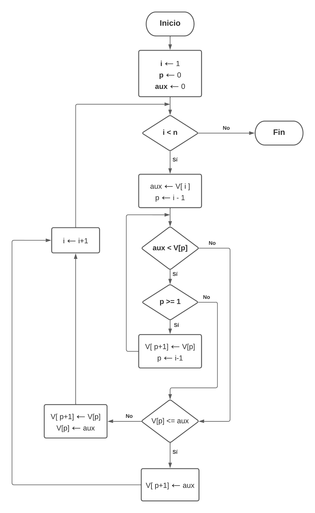
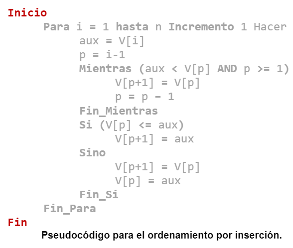

Funcionamiento del algoritmo
El método de ordenamiento por inserción construye el arreglo ordenado de izquierda a derecha de la siguiente forma:
1. Selección del valor clave
Se selecciona a uno de los elementos del arreglo como valor clave, con el propósito de colocarlo en su posición correcta, comenzando inicialmente con el segundo elemento del arreglo como valor clave.
2. Comparación
Se compara el valor clave con cada uno de los elementos a su izquierda.
3. Desplazamiento a la derecha
Si un elemento es mayor o menor que el valor clave (Dependiendo del criterio seleccionado para el ordenamiento), entonces el elemento se desplaza una posición a la derecha de su posición actual.
4. Condición de paro de la iteración
El proceso de comparación y desplazamiento de los elementos continúa hasta llegar al inicio del arreglo o hasta encontrar algún elemento mayor (o menor según el criterio de ordenamiento) o igual al valor clave.
5. Inserción del valor clave
Al cumplirse la condición de paro, se realiza una última comparación entre el valor clave y el primer elemento del arreglo o el elemento que detuvo las comparaciones para poder determinar en qué posición se debe colocar el valor clave.
Si el elemento es mayor o menor al valor clave (Dependiendo del criterio de aceptación), entonces el valor clave se coloca en la posición del elemento, mientras que el elemento se desplaza una posición a la derecha. En caso contrario, el valor clave se coloca una posición a la derecha del elemento comparado.
6. Repetición del proceso
La serie de pasos mencionados se repiten para cada elemento del arreglo de manera secuencial, seleccionando un valor clave y buscando su posición correcta en cada iteración.
Al final de cada iteración, se colocara uno de los elementos en su posición correcta a la izquierda del arreglo, desplazándolo una posición a la derecha en otras iteraciones en caso de ser necesario.
7. Finalización
El algoritmo finaliza cuando se haya aplicado el proceso mencionado al último elemento del arreglo, momento en el que se considerara que el arreglo se encuentra ordenado.
Diagrama de flujo

Pseudocódigo

Características
- Es considerado como uno de los algoritmos más eficientes al momento de ordenar arreglos con pocos elementos.
- Por la forma en la cual trabaja, se considera como un algoritmo que aplica comparaciones para ordenar un conjunto de datos.
- Se considera que el algoritmo trabaja de forma más eficiente cuando el arreglo se encuentra parcialmente ordenado.
- Es eficiente en memoria debido a que el proceso de ordenamiento se realiza en el mismo arreglo en el que se encuentran los elementos a ordenar (No requiere la creación de otro arreglo).
- No se recomienda para arreglos de gran tamaño.